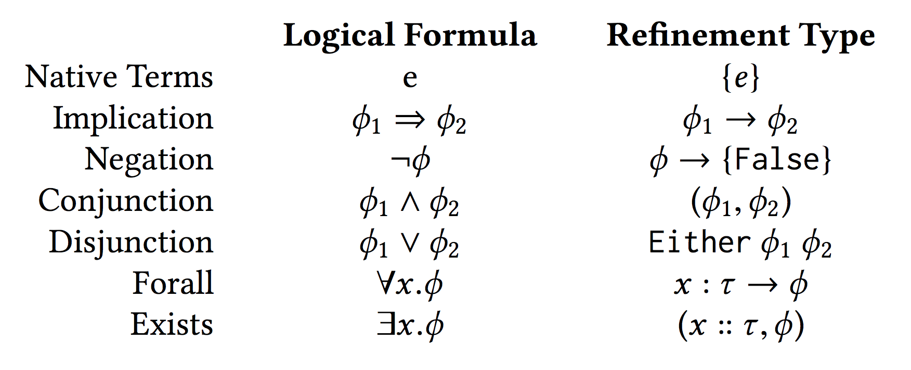

Encoding Natural Deduction
Let's see how natural deduction is encoded as type derivation!
module NaturalDeduction where
{-@ LIQUID "--higherorder" @-}
{-@ LIQUID "--exact-data-con" @-}
import Language.Haskell.Liquid.ProofCombinators
import Prelude hiding ((++), length)
{-@ infix ++ @-}
Propositions as Types

Natural Deduction as Type Derivation
becomes
Exists over Forall in Natural Deduction
ϕ ≡ (∃x.∀y.(p x y)) ⇒ (∀y.∃x.(p x y))

Read bottom up, it is a proof!
Exists over Forall in Natural Deduction
ϕ ≡ (∃x.∀y.(p x y)) ⇒ (∀y.∃x.(p x y))
λe y.case e of {(x, ex ) → (x, ex y)}
Read top down, we get a proof term!
Exists over Forall in Haskell!
ϕ ≡ (∃x.∀y.(p x y)) ⇒ (∀y.∃x.(p x y))
λe y.case e of {(x, ex ) → (x, ex y)}
{-@ exAll :: p:(a -> a -> Bool)
-> (x::a, y:a -> {v:Proof | p x y})
-> y:a
-> (x::a, {v:Proof | p x y}) @-}
exAll p = \e y -> case e of {(x, ex) -> (x, ex y)}
Distributing Existentials
ϕ∃ ≡ (∃x.p x ∨ q x) ⇒ ((∃x.p x) ∨ (∃x.q x))
{-@ exDistOr :: p : _ -> q : _
-> (x :: a ,Either {v:b | p x } {v:c | q x })
-> Either (x::a , {v:b | p x }) (x::a , {v:c | q x }) @-}
exDistOr _ _ (x, Left px) = Left (x, px)
exDistOr _ _ (x, Right qx) = Right (x, qx)
Distributing Universals
ϕ∀ ≡ (∀x.p x ∧ q x) ⇒ ((∀x.p x) ∧ (∀x.q x))
{-@ allDistAnd :: p:_ -> q:_
-> (x:a -> ({v:Bool | p x }, {v:Bool| q x}))
-> ((x:a -> {v:Bool | p x }), (x:a -> {v:Bool| q x })) @-}
allDistAnd _ _ andx =
((\x -> case andx x of (px, _ ) -> px)
,(\x -> case andx x of (_ , qx) -> qx))
Let's use SMT to simplify the proof!
Properties of User Defined Datatypes
ϕ ≡ ∀xs.((∃ys. xs = ys ++ ys) ⇒ (∃n.length xs = n + n))
{-@ evenLen :: xs:_
-> (ys::L a, {v:Proof | xs = ys ++ ys })
-> (n ::Int, {v:Proof | length xs = n + n }) @-}
evenLen xs (ys, pf) = (length ys, lenAppend ys ys &&& pf )
{-@ lenAppend :: xs:_ -> ys:_
-> { length (xs ++ ys) = length xs + length ys } @-}
Induction on Natural Numbers
ϕind ≡ (p 0 ∧ (∀n.p (n − 1) ⇒ p n) ⇒ ∀n.p n)
{-@ ind :: p:_
-> ({v:Proof| p 0}, (n:Nat -> {v:Proof | p (n-1)} -> {v:Proof | p n}))
-> n:Nat
-> {v:Proof | p n} @-}
ind p (p0, pn) n
| n == 0 = p0
| otherwise = pn n (ind p (p0, pn) (n-1))
Summary:
Refinement Reflection and Proof by Logical Evaluation combined ...
... allow for complete verification with SMT-automation!
- Case Study: MapReduce Equivalence
- Case Study: Encoding Natural Deduction
Haskell Sigs
exDistOr :: (a -> Bool) -> (a -> Bool) -> (a, Either c d) -> Either (a, c) (a,d)
exAll :: (a -> a -> Bool) -> (a, a -> Proof) -> a -> (a, Proof)
ind :: (Int -> Bool) -> (Proof, Int -> Proof -> Proof) -> Int -> Proof
allDistAnd :: (a -> Bool) -> (a -> Bool) -> (a -> (Bool,Bool))
-> (a -> Bool, a -> Bool)
evenLen :: L a -> (L a, Proof) -> (Int, Proof)
Code for Lists
{-@ LIQUID "--automatic-instances=liquidinstances" @-}
lenAppend :: L a -> L a -> Proof
lenAppend N _ = trivial
lenAppend (C x xs) ys = lenAppend xs ys
data L a = N | C a (L a)
{-@ data L [length] a = N | C {hd :: a, tl :: L a} @-}
length :: L a -> Int
{-@ length :: x:L a -> {v:Nat | v == length x} @-}
{-@ measure length @-}
length N = 0
length (C _ xs) = 1 + length xs
(++) is Haskell's usual append reflected in the logic.
{-@ reflect ++ @-}
N ++ ys = ys
(C x xs) ++ ys = C x (xs ++ ys)